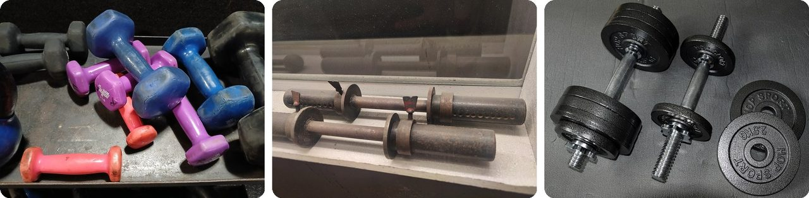
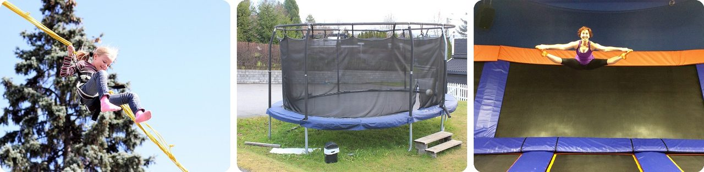

🌍 Top 10 Home Workouts and Quick Exercises for Kids
Nov 20, 2026
1. 🇷🇺 The kettlebell started out as a market weight
 In 1700s Russia, a girya (a cast-iron ball with a handle) wasn't gym gear. Sellers used it as a weight to measure out crops at the market.
In 1700s Russia, a girya (a cast-iron ball with a handle) wasn't gym gear. Sellers used it as a weight to measure out crops at the market.
By the 1800s, circus strongmen were swinging them around for crowds, and soon people were lifting them for sport. The classic size is one pood, an old Russian unit of about 16 kg (36 lb), roughly what an average 4-year-old weighs.
And here's the trick: most of the weight sits out past your hand instead of inside your grip. So in a kettlebell swing, the power comes from snapping your hips forward, not from lifting with your arms.
Basically, it's a grocery-scale weight that ran off and joined the gym.
2. 🏴 A dumbbell is a bell that never rings

In 1600s England, church bell ringing took off as a hobby, and people started putting bell-like exercise machines in their houses. Each one had two crossed bars with weights on the ends, spinning on an axle, with a rope hanging down to pull.Pulling the rope felt like ringing a real bell, but there was no bell, so it made no sound. In old English, silent meant "dumb." In 1711, the writer Joseph Addison mentioned working out with a "dumb bell" in a magazine called The Spectator.
The idea of lifting hand weights is much older, though: ancient Greeks used ones called halteres, and even carried them in the long jump.
In other words, it's bell-ringing practice with the bell taken out.
3. 🇺🇸 The burpee was invented as a quick heart test
 In 1939, a US scientist named Royal H. Burpee made up the move for his PhD at Columbia University. His version had just four steps: squat with hands on the floor, kick your feet back into a plank, hop them back in, stand up.
In 1939, a US scientist named Royal H. Burpee made up the move for his PhD at Columbia University. His version had just four steps: squat with hands on the floor, kick your feet back into a plank, hop them back in, stand up.
You only did it four times. He then checked your heart rate to see how fast your heart calmed back down, a sign of how well it pumps.
In 1942 the US Army turned it into a speed test: how many in 20 seconds? 8 was poor, 13 or more was excellent. The record today is 38 chest-to-floor burpees in one minute, about one every 1.6 seconds.
It's a doctor's checkup that turned into everyone's favorite-to-hate move.
4. 🇺🇸 Jumping jacks are named after a toy on a string
 A jumping jack used to be a wooden puppet toy. Pull its string, and its arms and legs fling out to the sides. Let go, and they snap back in.
A jumping jack used to be a wooden puppet toy. Pull its string, and its arms and legs fling out to the sides. Let go, and they snap back in.
People did the same motion as an exercise and borrowed the toy's name. A popular story says that in 1885, an older cadet at West Point military school named John "Black Jack" Pershing made new students do it while he pulled a pretend string.
The record is 136 jumping jacks in one minute, set in Nepal in 2023. That's more than two every second.
Every time you do one, you're acting out a toy puppet.
5. 🇯🇵 A full Tabata workout takes just 4 minutes
 In 1996, Japanese professor Izumi Tabata (田畑泉) tested a tiny workout on Olympic speed skaters. Ride an exercise bike as hard as possible for 20 seconds, rest 10 seconds, and repeat 8 times. That's 4 minutes.
In 1996, Japanese professor Izumi Tabata (田畑泉) tested a tiny workout on Olympic speed skaters. Ride an exercise bike as hard as possible for 20 seconds, rest 10 seconds, and repeat 8 times. That's 4 minutes.
After 6 weeks, these athletes improved their stamina about as much as a group that rode at a steady pace for 60 minutes a day. And only the 4-minute group got better at short, all-out bursts too.
The study used a bike, but the same 20-on, 10-off clock is now used with all kinds of moves.
Think of it as a whole workout that's shorter than one pop song.
6. 🇺🇸 Double Dutch grew up on New York sidewalks with clotheslines
 In Double Dutch, two people turn two long ropes in opposite directions while a jumper hops between them. In the 1940s and 1950s, Black girls in New York City made it a street-corner sport, often using clotheslines as ropes.
In Double Dutch, two people turn two long ropes in opposite directions while a jumper hops between them. In the 1940s and 1950s, Black girls in New York City made it a street-corner sport, often using clotheslines as ropes.
In the early 1970s, two New York police officers, Ulysses Williams and David Walker, wrote official rules, and the first real contest was held in 1974. By 2009 it was a varsity sport in New York City public high schools.
The name may come from old English slang: "double Dutch" meant talk that sounds like total nonsense, a joke about how confusing the ropes look.
Basically, it's jump rope with twice the rope and twice the rhythm.
7. 🇦🇺 The hula hoop craze started with bamboo hoops in Australia
 A teacher in Sydney, Australia, had students swing bamboo hoops around their waists in gym class. The hoops got so popular that an Australian toy company started making them from plastic in 1957 and sold 400,000 that year.
A teacher in Sydney, Australia, had students swing bamboo hoops around their waists in gym class. The hoops got so popular that an Australian toy company started making them from plastic in 1957 and sold 400,000 that year.
Then the US company Wham-O made its own plastic version, named the hula hoop after the Hawaiian hula dance and its swaying hips. In 1958 it sold for $1.98.
What happened next was wild: 25 million hoops sold in less than four months. That's about 200,000 hoops a day.
A gym-class toy went viral long before the internet.
8. 🇺🇸 The trampoline is named after a Spanish diving board

In 1936, two University of Iowa gymnasts, George Nissen and Larry Griswold, watched circus trapeze artists bounce off their safety net. They stretched canvas over an iron frame with coiled springs and built the first modern trampoline.While showing it off in Mexico in the late 1930s, Nissen heard the Spanish word trampolín, meaning "diving board," and took it as the name.
Here's the surprise: the mat itself barely stretches. The springs around the edge store the energy and throw you back up. During World War II, the US Navy even used trampolines to help pilots learn which way is up when flipping through the air.
So the bounce lives in the springs, not the mat.
9. 🇺🇸 A US president's doctor invented a game with a 6-pound ball
 After Herbert Hoover won the 1928 election, his doctor, Joel T. Boone, wanted to keep him fit. He invented Hooverball, based on a game Hoover saw sailors play on a navy battleship.
After Herbert Hoover won the 1928 election, his doctor, Joel T. Boone, wanted to keep him fit. He invented Hooverball, based on a game Hoover saw sailors play on a navy battleship.
It's like volleyball, except you catch a heavy medicine ball and throw it back over an 8-foot (2.4 m) net. The ball weighs about 6 pounds (2.7 kg), about as much as a small bowling ball. It's scored like tennis.
People still play it: a national championship is held every year in West Branch, Iowa.
Picture volleyball where you have to catch a bowling ball.
10. 🇨🇿 The plank world record is longer than a school day
 A plank looks easy: hold a push-up position on your forearms and toes, and don't move. But keeping still makes your belly, back and shoulder muscles work the whole time.
A plank looks easy: hold a push-up position on your forearms and toes, and don't move. But keeping still makes your belly, back and shoulder muscles work the whole time.
In May 2023, Josef Šálek from the Czech Republic held one for 9 hours, 38 minutes and 47 seconds. That's longer than a whole school day.
And it's good for more than abs. A big review of 270 studies found that hold-still exercises like planks and wall sits did better at lowering blood pressure than other kinds of workouts.
Think of it as a staring contest with the floor.
Fun fact
Kettlebells and dumbbells had a cousin: Indian clubs, wooden clubs that soldiers in India and Persia are believed to have swung for strength. Traditional ones could weigh up to 35 kg (77 lb), but the British army later adopted light 2 kg (4.4 lb) versions, and club swinging was even an Olympic event in 1904 and 1932. Then, in the 1800s, a man named DeWitt Cook started using them for juggling, and they inspired the juggling clubs performers toss today. Circus tricks and juggling hide plenty more surprises like that.
Photo credits (Wikimedia Commons)
- #1: Kettlebell truebalance romeike.jpg by Detlef Romeike, CC BY-SA 2.5
- #1: Competition kettlebell 16 kilo.jpg by Knuckles, CC BY-SA 3.0
- #1: Kettlebell voor fitness 6 kg.jpg by Richardkiwi, CC BY-SA 4.0
- #2: Colorful dumbbells of various sizes.jpg by Ser Amantio di Nicolao, CC BY-SA 4.0
- #2: Rudolf Ismayr's Dumbbells, 1936.jpg by New York-air, CC BY-SA 4.0
- #2: Kurzhanteln 2 x 15 kg 2v2.jpg by Singlespeedfahrer, CC0
- #3: Airborne Burpee.jpg by Marine Corps photo by Sgt. Ryan Young, Public domain
- #3: Burpee 2 Squat.jpg by Taco fleur, CC BY-SA 4.0
- #3: CrossFit Open 12.1 - Burpees - Chris, Shane, and Adam, and Matt.jpg by Travis Isaacs (photos · photo sets), CC BY 2.0
- #4: Elementary school students conduct jumping jacks to warm up USMC-120214-M-MA421-288.jpg by Lance Cpl. Ryan M. Joyner, Public domain
- #4: Marie Anker um 1875.jpg by upload by Adrian Michael, Public domain
- #4: John Walters, right, a physiologist with the Health and Wellness Center, leads children in jumping jacks prior to participating in the Children's Mobility Line at Dover Air Force Base, Del., Aug. 22, 2013 130822-F-BO262-028.jpg by Roland Balik, Public domain
- #5: Women's 5000m Speed Skating Pair 8.jpg by Robert Scoble, CC BY 2.0
- #5: Stationary bikes at a gym.jpg by KeepActive Australia from Melbourne, VIC, Australia, CC BY-SA 4.0
- #5: A session of a boot camp exercise at Orji Flyover Owerri, Imo State.jpg by Dolphyb, CC BY-SA 4.0
- #6: Michelle Obama and kids double-dutch jump rope - P071511CK-0303 (6047842208).jpg by The White House from Washington, DC, Public domain
- #6: Double Dutch - The Ropestylers 3.jpg by Brandon Mongila, CC BY-SA 4.0
- #6: Elders of National Double Dutch League Performing.jpg by Kbwords, CC BY-SA 4.0
- #7: Girl twirling Hula Hoop, 1958.jpg by GeorgeLouis, CC BY-SA 3.0
- #7: One hula hoop (flickr) by quinn.anya, CC BY-SA 2.0
- #7: Hula Hoop OBS.jpg by Schorle, CC BY-SA 4.0
- #8: Girl jumping on trampoline with belts.jpg by Dmitry Rozhkov, CC BY-SA 3.0
- #8: Trampoline jump king.JPG by Øyvind Holmstad, CC0
- #8: Dian Nissen jumping at a trampoline park.jpg by Triffis, CC BY-SA 3.0
- #9: Hooverball Game on White House Lawn - DPLA - 7489e19fdef6a93ca88e3fe4f391f0c2.jpg by National Archives and Records Administration. Office of Presidential Libraries. Herbert Hoover Library. 4/1/1985, Public domain
- #9: MALS-24 latches onto Hooverball 130125-M-RT812-198.jpg by Christine Cabalo, Public domain
- #9: Herbert Hoover NHS - Hooverball trophies.jpg by Ser Amantio di Nicolao, CC BY-SA 4.0
- #10: Plank.jpg by Jaykayfit, CC BY-SA 3.0
- #10: Woman performing plank exercise at home gym.jpg by Shixart1985, CC BY 2.0
- #10: Medicine Ball Plank.jpg by Jgcastor, CC BY-SA 3.0


.jpg){kind=link}